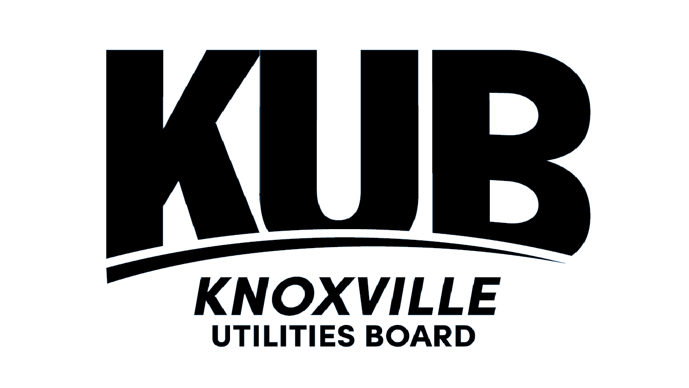

My name is Kyah and I am an *aspiring* Data Analyst with a staunch passion for creative problem solving. My determination and drive set me apart from others similar to me.
My interests have been piqued most by Support vector models (SVM) and cybersecurity; a dream profession for me would be at the intersection of both of those concepts.
Please read more about me and my career so far below. If you have any questions, comments, concerns, feel free to email me and also view my resume.
Thank you!
I am experienced with using programs such as R studio, Excel, JMP Pro, Power BI, Jira,
and all of the Office 365 applications. I have used these programs in academics and
in my internships. Since my collateral is in information management, I am wanting to help companies
manage their data, information, and work more effectively. I enjoy learning more about Statistical Process Improvement (SPC)
and ways to continuously improve processes within organizations.
I am currently interested in becoming more knowledgeable about cybersecurity and ways to protect virtual assets.
I am curious by nature, but perfection driven by choice.
Customer Experience
Great experiences build incredible brands. I contribute
to company brands by holding those values true in all aspects of my work.
01
GitHub Pages
This website was created with GitHub and modified to give you a better representation of me.
A great tool for collaboration and managing different versions.
02
WordPress Websites
I have used easier, more mainstream, ways to create a website as well. I used WordPress for
a public writing course and made a novice blog about free things to do in East, TN.
03
Creative
This is subjective, but I consume creative art and essays as forms of entertainment. Incorporating
diverse perspectives in organizations, and personal life, is a huge competitive advantage.
04
Visual Studio Code
I am a novice in html and css, but VSC is an incredible tool to use when making any sort of change to
a project.
05
Collaborative
I can adapt easily and quickly to meet the needs of any group. I enjoy working with like minds
on difficult tasks rather than working alone. Great groups can make work feel fun.
06
A sneak peak into...
who I am.
Born in Hagerstown, Maryland to a small family of East Coast natives. I grew up in East Tennessee and studied at the University of Tennessee, Knoxville as
a first generation college student. It was tough making it through, but I cherish the experience and the person that came out on the otherside.
I am a member of "Gen Z" and although I reluctantly claim the title, I have to admit that we're changing the way people think about everyday things.
Breaking the boundaries of generations before is not always a good thing, but it can help push everyone forward. I feel like I am somewhere in between
an old soul and a 21st century nerd. I know when and where to respect precedence, but data helps to push me when it is time to make a change.
So what?
Everday people use technology for a plethora of reasons but organizations have to constantly think about what will be on the horizon, while keeping the present in context.
There are new solutions to the old problems that make organizations more efficient, effective, environmentally friendly, whatever they want to be;
and this is all made possible with a process improvement approach that focuses on the story of the data.
Business/Data anaytlics primarily caught my attention because it is very calculated. Making data driven decisions
boosts confidence and brings security. I think most companies could use an extra layer of security when making big, or small, decisions and that is what
I am here for.
In my career, I have been fortunate enough to experience a range of different industries. Having more experience
in multiple fields brings me more context to the type of data that organizations collect. For example, working at Knoxville Utilites Board gave
me more perspective on how developers have to map out the tests when updates are made to the customer website.
The Latest News on...
Kyah's Career.

Started Student worker program with Knoxville Utilities Board.
Hired on as a Business Analytics student worker to help refine business processes and analyze their data outputs.
Some projects would include, but not limited to: converting dated crystal reports into
Power BI dashboards, conduct user acceptance testing for the customer website,
providing different departments with analysis on repetitive RFCs to help with automation,
and becoming involved with the organization's procurement processes.
Started Summer internship program at Clayton Homes.
Secured an opportunity with Clayton Homes' mortgage subsidiary, Vanderbilt Mortgage and Finance, working in the customer service center.
I utilized my empathy to help customers understand the fine details of their loan. Escrow and insurance
can be overwhelming for anyone and I wanted to be the liason to help relieve stress. I loved getting to know
more about the business and the people who help run it.
Began a Customer Service Specialist at Hybrid Grading Approach.
Hybrid Grading Approach was a startup company that a local Knoxville man established in early 2021.
I worked actively to exceed customer expectations in every way. I managed the FaceBook communication
at the tail-end of my employment with HGA. I also trained many employees on both the Intercom messaging system
and the FaceBook business page. Overall, this customer service experience helped to broaden my horizons
and strengthen my ability to diffuse situations.